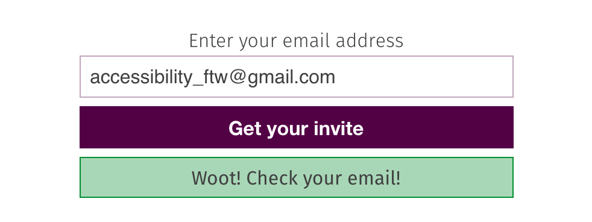

Accessibility
Making sure that everything we do at Hoodie, is accessible to everyone.
In 1997, the W3 launched the "International Program Office for Web Accessibility Initiative". In the press release, Tim Berners-Lee said the following: "The power of the Web is in its universality. Access by everyone regardless of disability is an essential aspect".
One of the first things you see when you go to the Hoodie website is the heading "Hoodie is for you". By "you", we mean everyone. By everyone, we mean everyone. That brings us to this guide, which outlines how we can make Hoodie accessible.
A common misconception when we talk about accessibility is that we mean to cater for those who have long-term limited abilities or impairments only. Often mentioned examples are blindness and motor and cognitive disabilities. It includes that, but it also includes so much more.
Here are some examples of things that can hinder and change your experience with the web:
A user should be able to navigate to all content using a keyboard. They should be able to use the TAB key to get to all inputs, links and buttons. They should be able to submit forms using the ENTER key. They should be able to open and close panels using the ENTER and ESC keys.
Feedback should be provided to the user when they TAB to elements, with use of a focus states.
All writing should use simple language. By default, text should be able to be read by individuals with a reading age of 12–14 years. Technical terms should be simplified where possible. Each part of the content should have an appropriate heading.
HTML5 is wonderful. With its introduction we gained many elements that gave actual context to what they do (<header>, <article>, <footer>), reducing the need to use lots of <div> elements that give no semantic understanding.
All HTML Elements must have ARIA Roles where needed. ARIA Roles tell assistive devices like screenreaders (NVDA, VoiceOver) the role of the element (is it a header, is it a footer, is it the main content?) and its state (hidden, visible, open, closed, etc.).
With HTML5, many ARIA roles are implicit to the semantic element. So in theory, you do not need to add role='header' to a <header> element. But, as not all browsers and technologies support these HTML elements, it is a good idea right now to add ARIA roles to our elements whether the role is already implicitly implied or not.
Design is important. We must make our websites as visually accessible as possible.
We must be able to make the out the text of an element from its background. A dark grey element with slightly lighter grey text is difficult to decipher
We need to know when they are interacting with something. All links, buttons and other focusable elements must stand out: this can be achieved in many ways with colour changes, underlines, borders and more. They should also have appropriate hover, focus and active states for when a user both mouses over the content and navigates to it via the use of a keyboard.
Simplicity is one of the best things you can do to make your website/application accessible. Properly sectioned and grouped content and visually different elements can make it much easier to view your content. Consistency in themes, colours and styles will help this effort too.
Attention is a finite resource. So, we do not want to scream things at our users from every possible direction. There should be a nice simple happy path when interacting with our content.
If you include auditory and visual content, they must have transcripts, subtitles and audio descriptions where necessary. What use is a big introductory video if visually impaired people do not know what is going on? How useful is an .mp3 file without a transcript for those with hearing problems?
On our chat page we list two forms of communicating with the community: IRC and Slack. To help people find us on Slack we have a sign up form that looks (at the time of writing) like this:
<form id="slack-integration">
<input id="mail-for-slack" type="email" placeholder="me@mydomain.com" autofocus="true" required/>
<input type="submit" id="submit-slack" value="Get your Invite"/>
<div class="message"></div>
</form>
The following PR suggests some improvements that can be made to the form to make it more accessible: https://github.com/hoodiehq/hood.ie/pull/188
<form id="slack-integration">
<label for="mail-for-slack">Enter your email address</label>
<input id="mail-for-slack" type="email" placeholder="me@mydomain.com" required>
<button type="submit" id="submit-slack">Get your invite</button>
<div id="slack-form-message" class="message"></div>
</form>
